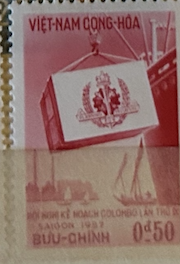
| SOURCE | TITLE| IMAGE MATCH | click to source page |
| Tripod (Lycos) | Vietnam, 1957 Stamp Year-Page 1 of 2 | 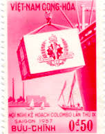 |
| Stamp Bears | Vietnam Stamps by tomd | Stamp Bears | 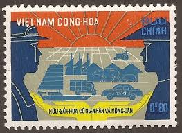 |
| eBay | Vietnam 2002 (3266) Propaganda | eBay | 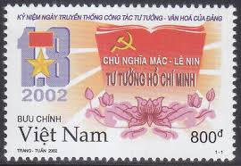 |
| Tripod (Lycos) | VietNam, 1958 Stamp Year-Page 1 of 2 |  |
| Freestampcatalogue.com | Stamps from Vietnam - Freestampcatalogue.com - The free online stampcatalogue with over 500.000 stamps listed. | 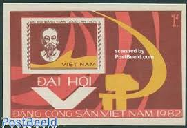 |
| eBay | Ho Chi Minh 1982(148 Souvenir Sheets) - 5th Vietnam Communist Party Congress | eBay | 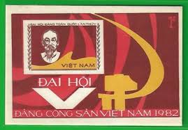 |
| eBay | PF Vietnamese Stamps for sale | eBay |  |
| eBay | O) 1984 VIETNAM, PROOF, MILITARY, VICTORY AT DIEN BIEN PHU, SCT M37, BLOCK IMPER | eBay | 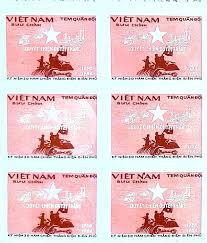 |
| eBay | Vietnam 1990 Comunista Partito Ho Chi Minh - Primo Ministro Politica | eBay | 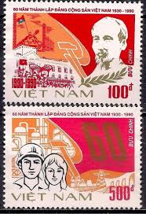 |
| eBay | 1982 VN Souvenir Sheet 5th Vietnamese Communist Party Congress Sc # 1171 Imperf. | eBay | 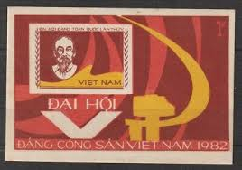 |
| Indian Stamp Co. | VIETNAM 1986-25th Anniv. of 1st Man in Space, Cosmonauts, S.G. MS 935, Scott 1621, MNH - Indian Stamp Co. | Stampex India | 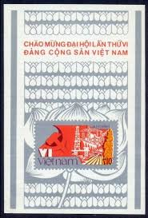 |
| david-hearne.com | Mailing & Stamps in 1967 | 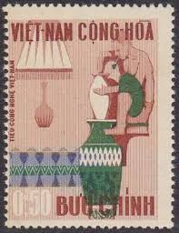 |
| DealBid | Browse Listings in Stamps > Asia > Vietnam - Page 14 of 14 - Lowest Price First | DealBid | 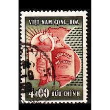 |
| eBay | VIETNAM 1986, COMMUNIST PARTY - 6TH CONGRESS, Scott 1704 SOUVENIR SHEET, MNH | eBay | 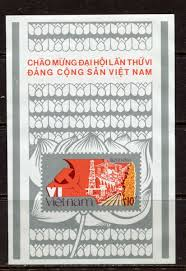 |
| Alamy | 500 dong bank note of Vietnam. Dong is the national currency of Vietnam Stock Photo - Alamy | 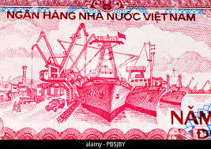 |
| kbcoins.in | Vietnam -500 dong unc currency note - KB Coins & Currencies | 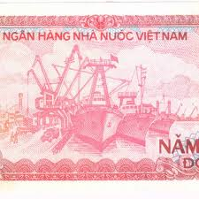 |
| eBay | 1958 South Vietnam Stamps United Nations Day Scott # 90 - 91 MNH | eBay | 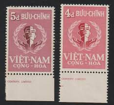 |
| eBay | North Vietnam #1171 unused no gum e207 10533 | eBay | 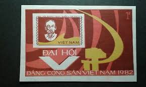 |
| bestasiatours.com | What to Buy in Vietnam: Perfumes, White Tiger Balm, Buffalo Horn Combs & More | Best Asia Tours | 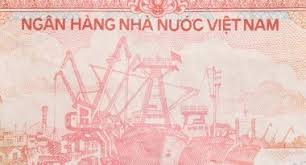 |
| eBay | 1982, VIETNAM, COMMUNIST LEADER-HO CHI MINH, IMPERF SOUVENIR SHEET, NH SC. #1171 | eBay | 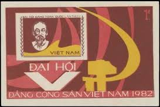 |
| eBay | Vietnam 1990 Sc # 2053-54 Impf. MNH (10581-6) | eBay | 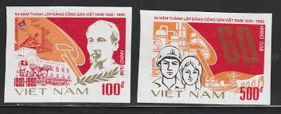 |
| eBay | 1971, VIET NAM, ORDER OF HO CHI MINH, 10XU MULTI, IMPERF RARITY, NH, SC. #623 | eBay | 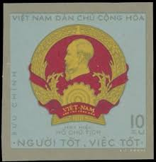 |
| Stamp Community Forum | Vietnam Postal History During The Vietnam War - Page 8 - Stamp Community Forum | 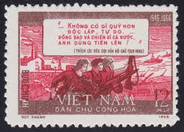 |
| eBay | Viet Nam: 500 Dong, 1988 | eBay | 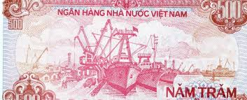 |
| eBay | 1966, VIETNAM, MILITARY STAMP, MEDAL AND INVALID'S BADGE, BLOCK OF 4, NH, SC.#M7 | eBay | 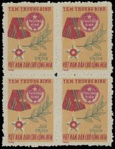 |
| Cherrystone Auctions | The Mahendra Sagar Collection of Inverted Centers - October 5-6, 2011 - VIETNAM, NORTH |  |
| eBay | Vietnam 1969 #362-63 ILO, 50th Anniv. - MNH | eBay | 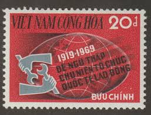 |
| eBay | Vietnam Scott# 1171 Ho Chi Minh 1982 MNH, S/S | eBay | 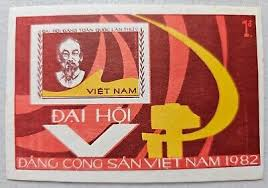 |
| Shutterstock | 7+ Hundred National Assembly Vietnam Royalty-Free Images, Stock Photos & Pictures | Shutterstock | 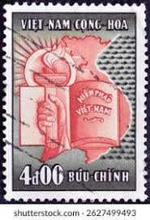 |
| eBay | 1971 North Vietnam Stamps Souvenir Sheet Hồ Chí Minh Scott # 624a MNH | eBay | 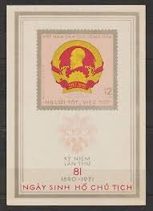 |
| eBay | South Vietnam 1970 Propaganda label - MNH President Thieu | eBay | 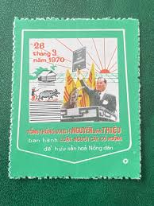 |
| eBay | 1971, VIETNAM, ORDER OF HO CHI MINH, 10XU MULTI, IMPERF RARITY, NH, SC. #623 IMP | eBay | 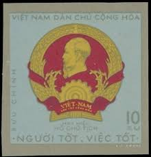 |
| eBay | N.724 -Vietnam- Greeting the 8th Congress of Vietnamese Communist Party | eBay | 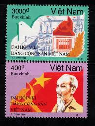 |
| eBay | Vietnam 500 Dong Banknote P-101 ND 1988 UNC | eBay | 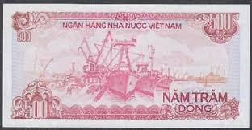 |
| eBay | 1988 Viet Nam Vietnam 500 Dong Uncirculated Banknote X323 | eBay | 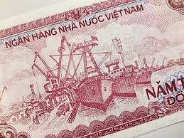 |
| gracemissionsministries.org | Vietnam Guide Guide Vietnam Carte Vietnam Sud 1/650.000 - Pour Randonnées Et National Geographic | 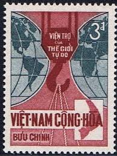 |
| eBay | SOUTH VIETNAM Pair of 1970 Label Farmer Day and President Nguyen Van Thieu MNH | eBay | 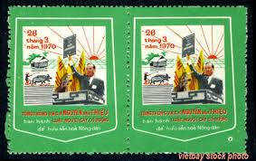 |
| Alamy | Vietnamese currency dong hi-res stock photography and images - Alamy | 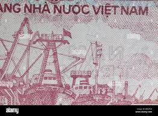 |
| Pixabay | Democratic Republic Of Vietnam - Free photo on Pixabay | 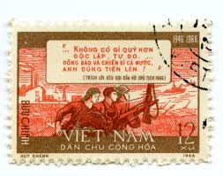 |
| eBay | 1990 VN Stamps Vietnamese Communist Party Sc # 2053-2054 Imperf. MNH | eBay | 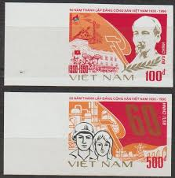 |
| eBay | 1971 North Vietnam Stamps Souvenir Sheet Hồ Chí Minh Scott # 624a MNH | eBay | 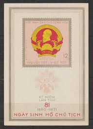 |
| PICRYL | 20 Đồng - South Vietnam (1962, SPECIMEN) First issues 02 - PICRYL - Public Domain Media Search Engine Public Domain Search | 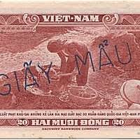 |
| Pngtree | Hochiminh Background Images, HD Pictures and Wallpaper For Free Download | Pngtree | 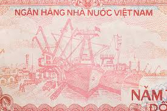 |
| Psywarrior | Sacred Sword of the Patriots League - Vietnam | 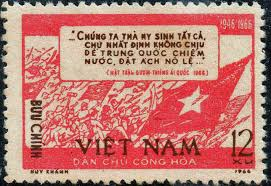 |
| Biblioteca Nacional de Angola | DEMOCRATIC REPUBLIC OF VIET NAM STAMPS | 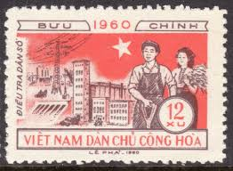 |
| eBay | VIETNAM 50th Anniversary of Ho Chi Minh's Last Testament MNH souvenir sheet | eBay | 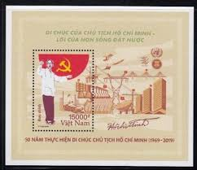 |
| eBay | Vietnam 2019 Specimen Overprinted (1114B) Ho Chi Minh | eBay | 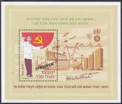 |
| eBay | 1990 Vietnam Stamps Vietnamese Communist Party Sc # 2053-2054 MNH | eBay | 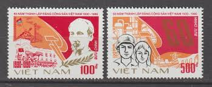 |
| Foreign first day stamp covers | 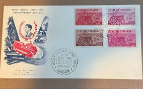 | |
| Todocolección | sl) vietnam insects ring beetles with leaf edge - Buy Antique stamps of Vietnam on todocoleccion | 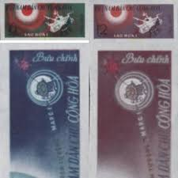 |
| eBay | 1955 SOUTH VIETNAM 5 DONG BANKNOTE V.F | eBay | 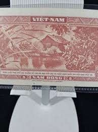 |
| eBay | 1984 North VN Stamps Victory at Dien Bien Phu Scott # M37 Imperf. MNH | eBay | 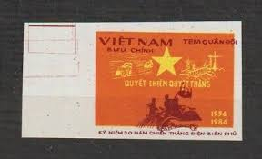 |
| Maps on Stamps | Maps on Stamps : Vietnam (South Vietnam) | A Database of Cartophilately | |
| eBay | 1986, VIETNAM, 6TH COMMUNIST PARTY CONGRESS, 4 SOUVENIR SHEETS, NH, SC. #1704 | eBay | |
| eBay | USSR 40th Anniversary Socialist Republic of Vietnam MNH stamp | eBay | |
| eBay | 1985 Vietnam Souvenir Sheet Socialist Republic of Việt Nam Scott # 1548 MNH | eBay | |
| Alamy | Vietnam war anniversary hi-res stock photography and images - Alamy | |
| eBay | Australia Flag Stamps Official UNICEF Proof Edition of First Day of Issue, '84 | eBay |  |
| eBay | VIETNAM Cultural Program MNH stamp | eBay | |
| iStock | Old Vietnamese Dong Vietnamese Currency Stock Photo - Download Image Now - Asia, Charity and Relief Work, Currency - iStock |